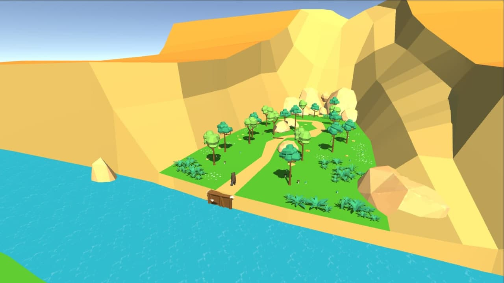

Beaver Lumberjack
Android Mobile game Developed with Unity(2020.3.13f1)
Be a Beaver!
Gnaw tree, build your dam and block the river.
In this game you can live a life of beaver. You have to gnaw on trees in a forest and draw them to the river. On the river you have to build a dam to block it and rise a water level. Very calm and relaxing game. Good to play with children who love animals.
Character control is implemented by using the Joystick asset. The tree is marked with an aura when the player approaches. There are 2 types of trees and you can collect only one type of them.
Character control is implemented by using the LeanTouch asset. The player must perform Slide a several number of times to switch to the next game mode.
Progress Bainforms about the state of the tree. Sawdust is made with Unity Particle system Character control is implemented by using the LeanTouch asset. The player must tap a certain number of times to enter the "Find the tree" game mode. Progress Bar informs about the state of your dam